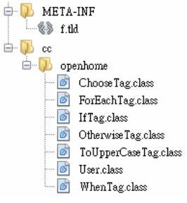

你可以將 TLD 檔案直接放在 Web 應用程式的 WEB-INF 資料夾或其子資料夾中，容器會在 WEB-INF 資料夾或子資料夾中找到 TLD 檔案並載入。如果要用 JAR 檔案來封裝自訂標籤處理器與 TLD 檔案，則與 Tag File TLD 檔案 說明的方式類似，不過這次 TLD 檔案不一定要放在 JAR 檔案的 META-INF/TLD S資料夾中，而只要是在 JAR 檔案的 META-INF 資料夾或子資料夾即可。也就是：
- JAR 檔案根目錄下放置編譯好的類別（包含對應套件的資料夾）。
- JAR 檔案 META-INF 資料夾或子資料夾中放置 TLD 檔案。
例如，可以將所開發的 Simple Tag 如下放置在一個 fake 資料夾中：

接著在文字模式中進入 fake 資料夾，執行以下的指令：
jar cvf ../fake.jar *
如此在 fake 資料夾上一層目錄中，就會產生 fake.jar 檔案，若想使用這個 fake.jar，只要將之置入 WEB-INF/lib 中，就可以開始使用自訂的標籤庫。